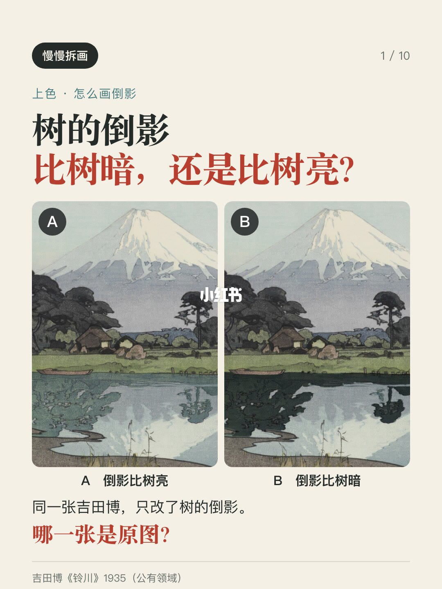
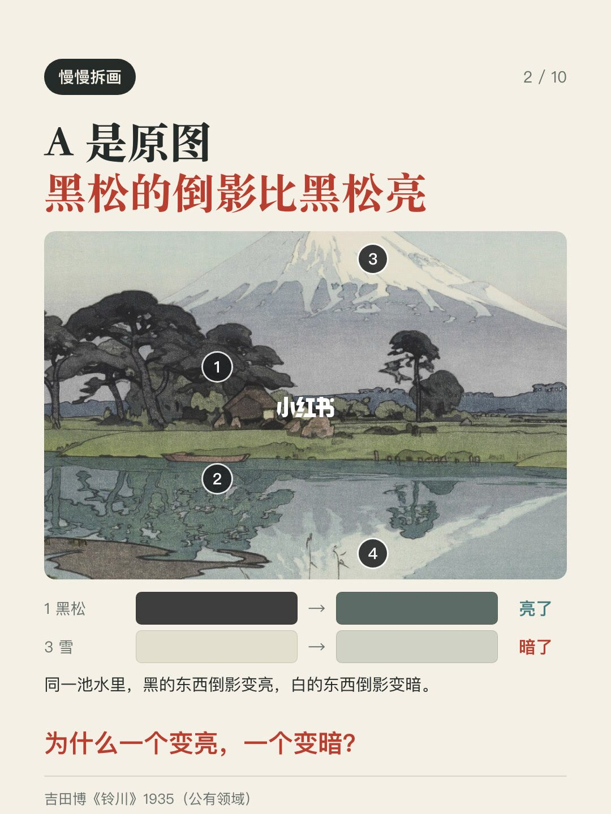
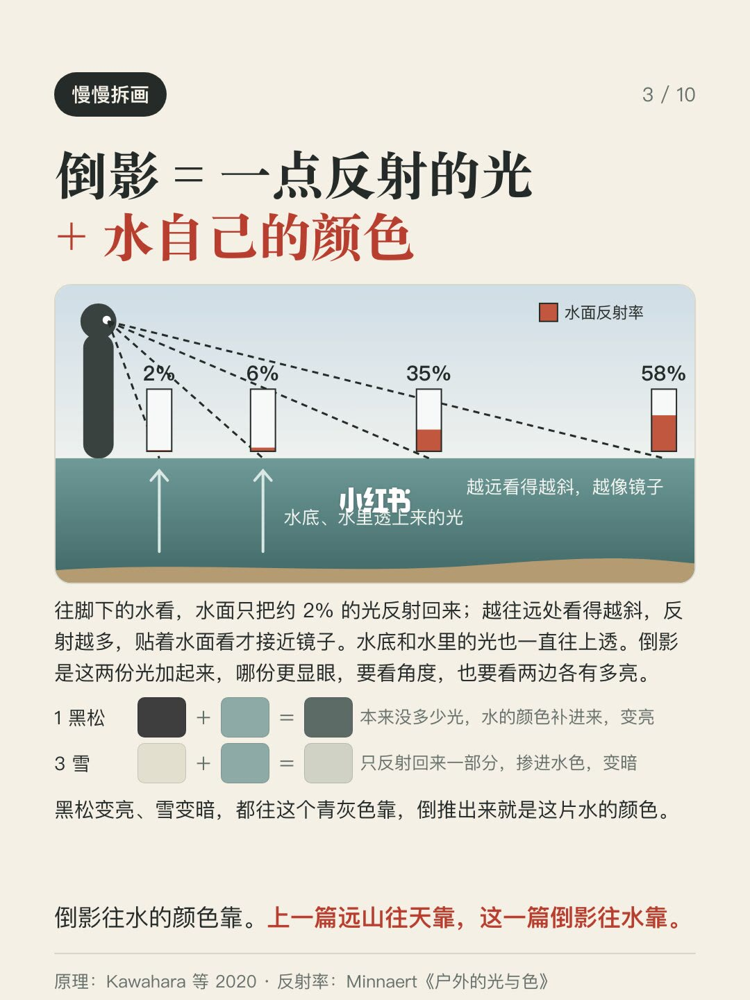
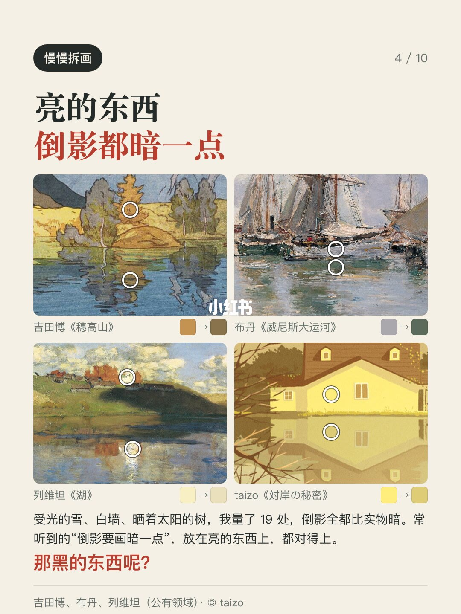
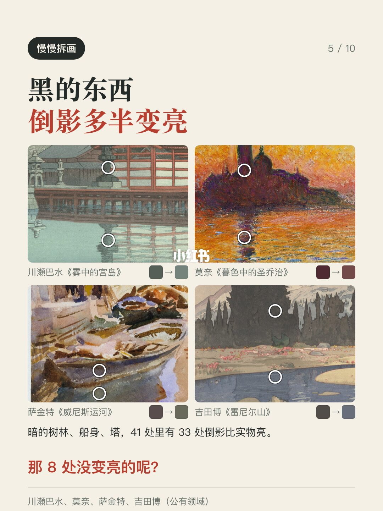
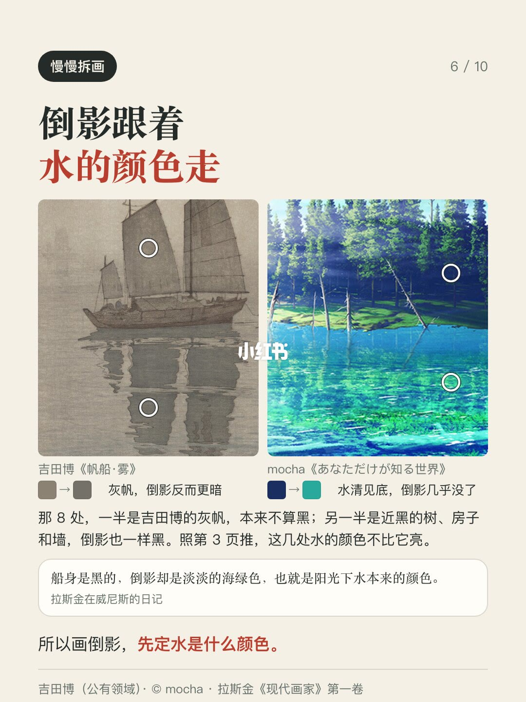
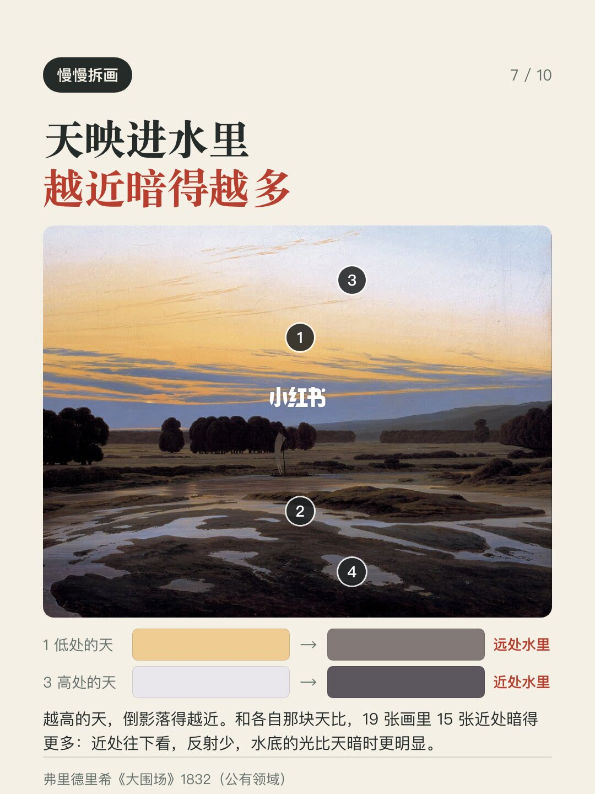
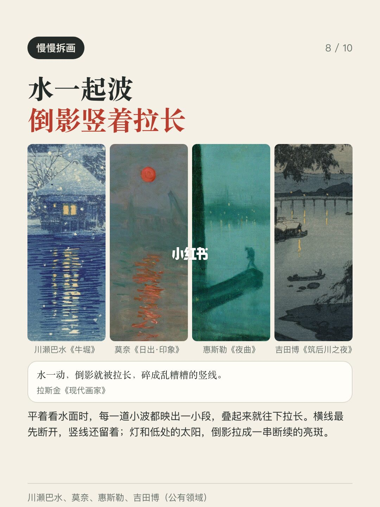
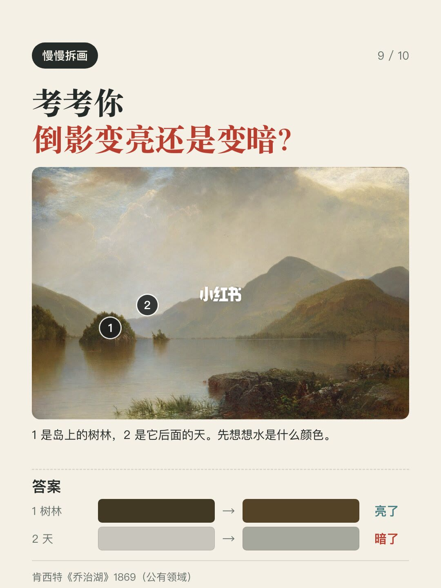
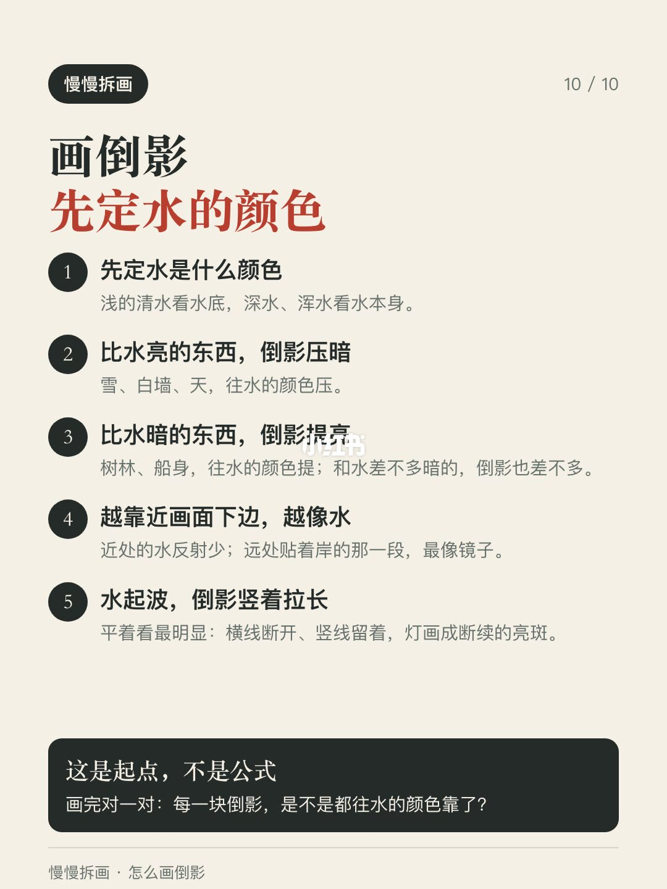

内容要点
画倒影，你是不是也听过“倒影要比实物画暗一点”？封面是同一张吉田博《铃川》，B 把树的倒影压得比树还黑，A 是原图：吉田博画的黑松，倒影反而比黑松亮。 我找了吉田博、川瀬巴水、莫奈、列维坦这些画水出名的画家，加上几位当代插画师，一共 38
知识结构
画倒影，你是不是也听过“倒影要比实物画暗一点”？封面是同一张吉田博《铃川》，B
画倒影，你是不是也听过“倒影要比实物画暗一点”？封面是同一张吉田博《铃川》，B
画倒影，你是不是也听过“倒影要比实物画暗一点”？封面是同一张吉田博《铃川》，B
- 画倒影，你是不是也听过“倒影要比实物画暗一点”？封面是同一张吉田博《铃川》，B 把树的倒影压得比树还黑，A 是原图：吉田博画的黑松，倒影反而比黑松亮。 我找了吉田博、川瀬巴水、莫奈、列维坦这些画水出名的画家，加上几位当代插画师，一共 38 张画，在每张画里把实物和它的倒影各取一块来比。亮的东西，雪、白墙、受光的树，19 处倒影全都比实物暗；暗的树林、船身、塔，41 处里有 33 处倒影比实物亮。 说到底是一句话：倒影是水面反射回来的一点光，加上水底和水里透上来的光。往脚下的水看，水面只反射约 2%；越往远处看得越斜，反射越多，贴着水面看才接近一面镜子。两份光哪份更显眼，要看角度，也要看各自有多亮。所以倒影往水的颜色靠：亮的东西反射回来打了折，就暗一点；黑的东西本来没多少光，水的颜色补进来，就亮了。拉斯金在威尼斯的日记里也写过，黑色的船身，倒影是淡淡的海绿色。 顺着这句话，例外也说得通。没变亮的 8 处，一半是吉田博帆船上的灰帆，本来不算黑，另一半是近黑的树和墙，倒影也一样黑，照这个道理推，这几处水的颜色不比它们亮；水清见底的时候，暗处的倒影几乎看不见，全是水底的颜色。天映进
画倒影，你是不是也听过“倒影要比实物画暗一点”？封面是同一张吉田博《铃川》，B 把树的倒影压得比树还黑，A 是原图：吉田博画的黑松，倒影反而比黑松亮。 我找
1/10–4/10封面/要点：画倒影，你是不是也听过“倒影要比实物
画倒影，你是不是也听过“倒影要比实物画暗一点”？封面是同一张吉田博《铃川》，B 把树的倒影压得比树还黑，A 是原图：吉田博画的黑松，倒影反而比黑松亮。 我找了吉田博、川瀬巴水、莫奈、列维坦这些画水出名的画家，加上几位当代插画师，一共 38 张画，在每张画里把实物和它的倒影各取一块来比。亮的东西，雪、白墙、受光的树，19 处倒影全都比实物暗；暗的树林、船身、塔，41 处里有 33 处倒影比实物亮。 说到底是一句话：倒影是水面反射回来的一点光，加上水底和水里透上来的光。往脚下的水看，水面只反射约 2%；越往远处看得越斜，反射越多，贴着水面看才接近一面镜子。两份光哪份更显眼，要看角度，也要看各自有多亮。所以倒影往水的颜色靠：亮的东西反射回来打了折，就暗一点；黑的东西本来没多少光，水的颜色补进来，就亮了。拉斯金在威尼斯的日记里也写过，黑色的船身，倒影是淡淡的海绿色。 顺着这句话，例外也说得通。没变亮的 8 处，一半是吉田博帆船上的灰帆，本来不算黑，另一半是近黑的树和墙，倒影也一样黑，照这个道理推，这几处水的颜色不比它们亮；水清见底的时候，暗处的倒影几乎看不见，全是水底的颜色。天映进




5/10–8/10第5/10页：怎么画倒影？看看吉田博和莫奈怎么画
画倒影，你是不是也听过“倒影要比实物画暗一点”？封面是同一张吉田博《铃川》，B 把树的倒影压得比树还黑，A 是原图：吉田博画的黑松，倒影反而比黑松亮。 我找了吉田博、川瀬巴水、莫奈、列维坦这些画水出名的画家，加上几位当代插画师，一共 38 张画，在每张画里把实物和它的倒影各取一块来比。亮的东西，雪、白墙、受光的树，19 处倒影全都比实物暗；暗的树林、船身、塔，41 处里有 33 处倒影比实物亮。 说到底是一句话：倒影是水面反射回来的一点光，加上水底和水里透上来的光。往脚下的水看，水面只反射约 2%；越往远处看得越斜，反射越多，贴着水面看才接近一面镜子。两份光哪份更显眼，要看角度，也要看各自有多亮。所以倒影往水的颜色靠：亮的东西反射回来打了折，就暗一点；黑的东西本来没多少光，水的颜色补进来，就亮了。拉斯金在威尼斯的日记里也写过，黑色的船身，倒影是淡淡的海绿色。 顺着这句话，例外也说得通。没变亮的 8 处，一半是吉田博帆船上的灰帆，本来不算黑，另一半是近黑的树和墙，倒影也一样黑，照这个道理推，这几处水的颜色不比它们亮；水清见底的时候，暗处的倒影几乎看不见，全是水底的颜色。天映进




9/10–10/10第9/10页：怎么画倒影？看看吉田博和莫奈怎么画
画倒影，你是不是也听过“倒影要比实物画暗一点”？封面是同一张吉田博《铃川》，B 把树的倒影压得比树还黑，A 是原图：吉田博画的黑松，倒影反而比黑松亮。 我找了吉田博、川瀬巴水、莫奈、列维坦这些画水出名的画家，加上几位当代插画师，一共 38 张画，在每张画里把实物和它的倒影各取一块来比。亮的东西，雪、白墙、受光的树，19 处倒影全都比实物暗；暗的树林、船身、塔，41 处里有 33 处倒影比实物亮。 说到底是一句话：倒影是水面反射回来的一点光，加上水底和水里透上来的光。往脚下的水看，水面只反射约 2%；越往远处看得越斜，反射越多，贴着水面看才接近一面镜子。两份光哪份更显眼，要看角度，也要看各自有多亮。所以倒影往水的颜色靠：亮的东西反射回来打了折，就暗一点；黑的东西本来没多少光，水的颜色补进来，就亮了。拉斯金在威尼斯的日记里也写过，黑色的船身，倒影是淡淡的海绿色。 顺着这句话，例外也说得通。没变亮的 8 处，一半是吉田博帆船上的灰帆，本来不算黑，另一半是近黑的树和墙，倒影也一样黑，照这个道理推，这几处水的颜色不比它们亮；水清见底的时候，暗处的倒影几乎看不见，全是水底的颜色。天映进


口述/画面要点（10段）
结合 Whisper medium 与画面大字整理；专有名词已校对。
封面/要点：画倒影，你是不是也听过“倒影要比实物画暗一点”？封面是同一张吉田博《铃川》，B
第2/10页：怎么画倒影？看看吉田博和莫奈怎么画
第3/10页：怎么画倒影？看看吉田博和莫奈怎么画
第4/10页：怎么画倒影？看看吉田博和莫奈怎么画
第5/10页：怎么画倒影？看看吉田博和莫奈怎么画
第6/10页：怎么画倒影？看看吉田博和莫奈怎么画
第7/10页：怎么画倒影？看看吉田博和莫奈怎么画
第8/10页：怎么画倒影？看看吉田博和莫奈怎么画
第9/10页：怎么画倒影？看看吉田博和莫奈怎么画
第10/10页：怎么画倒影？看看吉田博和莫奈怎么画